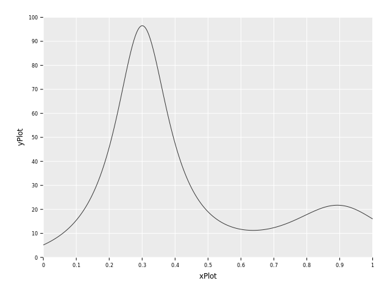

Test demo
import math, sequtils
import numericalnim, ggplotnim, benchy
proc f(x: float, ctx: NumContext[float, float]): float =
result = 1 / ((x - 0.3)^2 + 0.01) + 1 / ((x - 0.9)^2 + 0.04) - 6
proc F(x: float): float =
result = 10*arctan(10*x-3) + 5*arctan(5*x - 9/2) - 6*x
let ctxPlot = newNumContext[float, float]()
let xPlot = numericalnim.linspace(0, 1, 1000)
let yPlot = xPlot.mapIt(f(it, ctxPlot))
let dfPlot = toDf(xPlot, yPlot)
ggplot(dfPlot, aes("xPlot", "yPlot")) +
geom_line() +
ggsave("images/humps.png")

let a = 0.0
let b = 1.0
let tol = 1e-6
let N = 100
let exactIntegral = F(b) - F(a)
let trapzError = abs(trapz(f, a, b, N) - exactIntegral)
let simpsonError = abs(simpson(f, a, b, N) - exactIntegral)
let gaussQuadError = abs(gaussQuad(f, a, b, N) - exactIntegral)
let rombergError = abs(romberg(f, a, b, tol=tol) - exactIntegral)
let adaptiveSimpsonError = abs(adaptiveSimpson(f, a, b, tol=tol) - exactIntegral)
let adaptiveGaussError = abs(adaptiveGauss(f, a, b, tol=tol) - exactIntegral)
echo "Trapz Error: ", trapzError
echo "Simpson Error: ", simpsonError
echo "GaussQuad Error: ", gaussQuadError
echo "Romberg Error: ", rombergError
echo "AdaSimpson Error: ", adaptiveSimpsonError
echo "AdaGauss Error: ", adaptiveGaussError
Trapz Error: 0.00123417243757018
Simpson Error: 3.129097940757219e-07
GaussQuad Error: 3.907985046680551e-14
Romberg Error: 3.411159354982374e-09
AdaSimpson Error: 1.061664534063311e-09
AdaGauss Error: 0.0
import nimib
nbInit
nbText: hlMd"""
# Test demo
- 1
- 2
- 3
"""
nbCode:
import math, sequtils
import numericalnim, ggplotnim, benchy
proc f(x: float, ctx: NumContext[float, float]): float =
result = 1 / ((x - 0.3)^2 + 0.01) + 1 / ((x - 0.9)^2 + 0.04) - 6
proc F(x: float): float =
result = 10*arctan(10*x-3) + 5*arctan(5*x - 9/2) - 6*x
let ctxPlot = newNumContext[float, float]()
let xPlot = numericalnim.linspace(0, 1, 1000)
let yPlot = xPlot.mapIt(f(it, ctxPlot))
let dfPlot = toDf(xPlot, yPlot)
ggplot(dfPlot, aes("xPlot", "yPlot")) +
geom_line() +
ggsave("images/humps.png")
nbImage("images/humps.png")
nbCode:
let a = 0.0
let b = 1.0
let tol = 1e-6
let N = 100
let exactIntegral = F(b) - F(a)
let trapzError = abs(trapz(f, a, b, N) - exactIntegral)
let simpsonError = abs(simpson(f, a, b, N) - exactIntegral)
let gaussQuadError = abs(gaussQuad(f, a, b, N) - exactIntegral)
let rombergError = abs(romberg(f, a, b, tol=tol) - exactIntegral)
let adaptiveSimpsonError = abs(adaptiveSimpson(f, a, b, tol=tol) - exactIntegral)
let adaptiveGaussError = abs(adaptiveGauss(f, a, b, tol=tol) - exactIntegral)
echo "Trapz Error: ", trapzError
echo "Simpson Error: ", simpsonError
echo "GaussQuad Error: ", gaussQuadError
echo "Romberg Error: ", rombergError
echo "AdaSimpson Error: ", adaptiveSimpsonError
echo "AdaGauss Error: ", adaptiveGaussError
nbSave